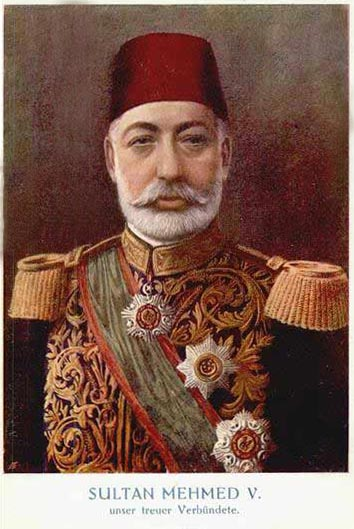

| önceki |  |
sonraki |
V. Mehmed (Sultan Mehmed Reşad), Osmanlı İmparatorluğu'nun otuz beşinci padişahıdır. Babası Sultan Abdülmecid, annesi Gülcemâl Sultan'dır. 65 yaşında tahta çıkmış ve 9 yıl hüküm sürmüştür. Saltanatı boyunca İttihat ve Terakki Fırkası'nın iktidarında anayasal bir hükümdar olarak kalmış; Trablusgarp Savaşı, Balkan Savaşları ve I. Dünya Savaşı gibi imparatorluğun kaderini tayin eden en fırtınalı devirde tahtta bulunmuştur.
Büyük Savaşlar ve Çanakkale Destanı
- Trablusgarp Savaşı (1911 – 1912): İtalya'nın Kuzey Afrika topraklarına saldırmasıyla başlamış; Mustafa Kemal ve Enver Bey gibi genç subayların yerel direnişi teşkilatlandırmasına rağmen Uşi Antlaşması ile Kuzey Afrika'daki son Osmanlı toprağı İtalya'ya bırakılmıştır.
- Balkan Savaşları Faciası (1912 – 1913): Dört Balkan devletinin ittifakıyla başlayan savaşta Edirne dahil neredeyse tüm Rumeli elden çıkmış, yüz binlerce muhacir Anadolu'ya göç etmek zorunda kalmıştır. II. Balkan Savaşı'nda Edirne Meriç sınırına kadar geri alınmıştır.
- Birinci Dünya Savaşı ve Cihâd-ı Ekber (1914): Osmanlı Devleti İttifak Devletleri (Almanya ve Avusturya-Macaristan) safında cihan harbine katılmış; Halife V. Mehmed Reşad dünya Müslümanlarına hitaben "Cihâd-ı Ekber" (Büyük Kutsal Savaş) fetvası yayımlamıştır.
- Çanakkale Zaferi (1915): İtilaf Devletleri donanmasının ve kara ordusunun Çanakkale Boğazı'nda kahramanca püskürtülmesiyle tarihin en büyük savunma zaferi kazanılmıştır. Bu zafer üzerine Padişaha "Gazi" unvanı verilmiştir.
- Kût'ül-Amâre Zaferi (1916): Irak Cephesi'nde Halil Kut Paşa komutasındaki Osmanlı ordusu, İngiliz ordusunu komutanı General Townshend ile birlikte tamamen esir alarak tarihe geçen bir zafer elde etmiştir.
- Vefatı: I. Dünya Savaşı'nın son aylarında, Mondros Mütarekesi imzalanmadan kısa süre önce 3 Temmuz 1918'de 73 yaşında vefat etmiştir. Eyüpsultan'da deniz kenarında kendi yaptırdığı türbesine defnedilmiştir (İstanbul'da sur dışına defnedilen tek padişahtır).
Ailesi
- Eşleri:
- Kâmures Başkadın
- Dürrüadn Kadın
- Mihrengiz Kadın
- Nazperver Kadın
- Dilfirib Kadın
- Erkek çocukları:
- Şehzade Mehmed Ziyaeddin Efendi (1873 – 1938)
- Şehzade Ömer Hilmi Efendi (1886 – 1935)
- Şehzade Mahmud Necmeddin Efendi (1878 – 1913)
- Kız çocukları:
V. Mehmed Reşad'ın kız çocuğu olmamıştır.
Mehmed Reşad hakkında daha fazla bilgi için buraya tıklayın.